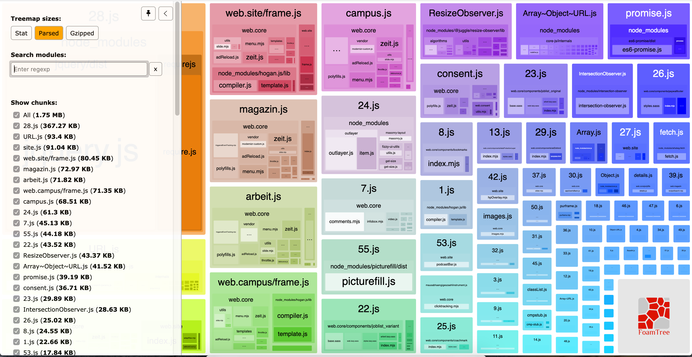
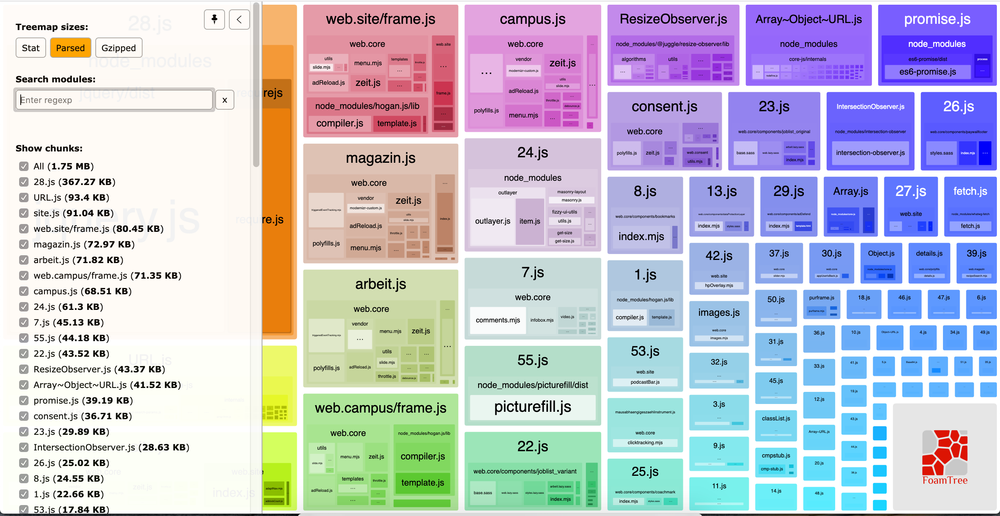
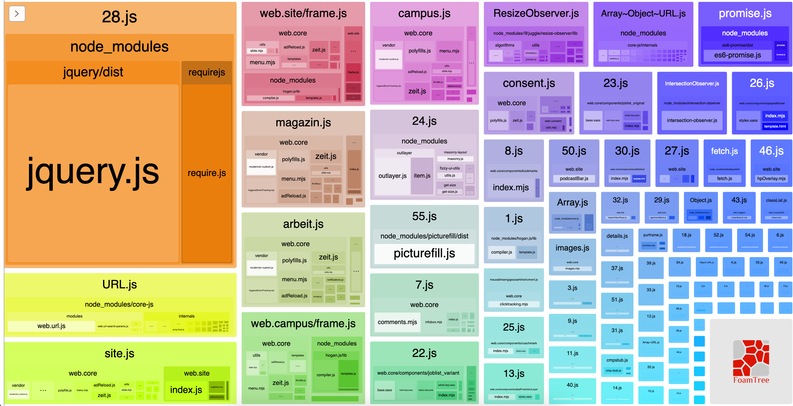

Babel and our supported browserlist¶
From time to time we try to update our browserlist. We do this, because the used browsers change, and we want to decrease our js/ css size.
First of all we can now safely use babel on all our js files.
currently¶
static/6.3 MB on the disk / 525 files
static/css/3.5MB on the disk / 355 files
static/js860KB on the disk / 92 files
site.js: 33KB on the disk
 

with babel applied to all files (.m?js)¶
static/6.3 MB on the disk / 525 files
static/css/3.5MB on the disk / 355 files
static/js/860 KB on the disk / 92 files
site.js: 33KB on the disk 

with babel applied to all files (.m?js) and our browserlist updated¶
We might try to update our browserlist to reduce the bundle size.
Therefore we use all Browsers with more then 0.3% of usage in germany.
This results in a slight decrease of the file sizes.
static6.2 MB on the disk / 525 files
css3.4 MB on the disk / 355 files
js848KB on the disk / 92 files
site.js: 33KB on the disk


With babel applied to all files and a custom browserlist¶
"browserslist": [
"Chrome >= 55",
"Firefox >= 52",
"Edge >= 17",
"Explorer >= 11",
"iOS >= 9",
"Safari >= 9",
"Android >= 7",
"Opera >= 58"
]
static/6.1 MB on the disk / 525 files
static/css3.3 MB on the disk / 355 files
static/js848 KB on the disk / 92 files
site.js: 33 KB on the disk